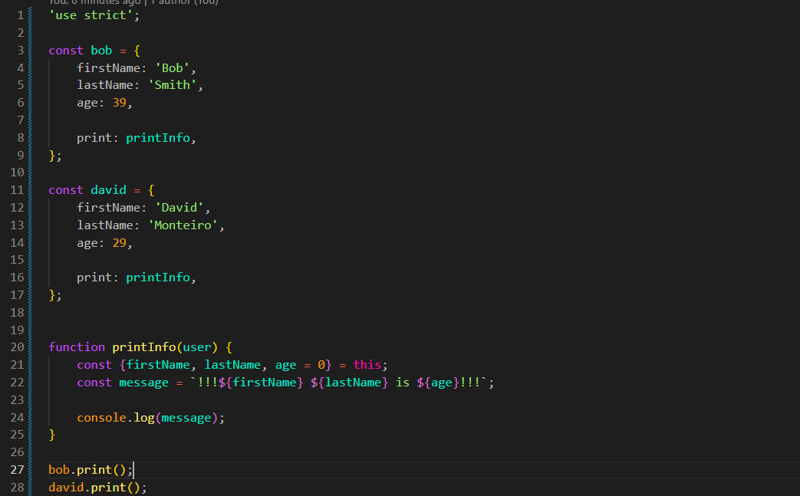
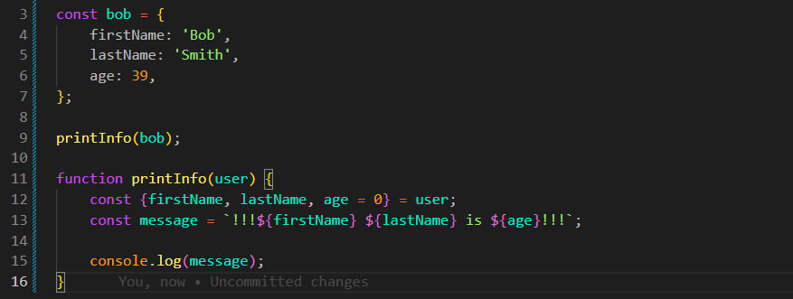

Object Methods
Intro
Aqui iremos ver sobre metodos de objetos.
Aqui iremos ver sobre metodos de objetos.
JS:

Atualmente em nosso código, podemos observar que temos uma função que recebe um objeto como parâmetro.

const bob = {
firstName: 'Bob',
lastName: 'Smith',
age: 39,
};
printInfo(bob);
function printInfo(user) {
const {firstName, lastName, age = 0} = user;
const message = `!!!${firstName} ${lastName} is ${age}!!!`;
console.log(message);
}
Porém, se quisermos, por exemplo, passar um número como argumento, nosso código irá funcionar, porém de forma incorreta, pois a função espera receber um objeto.
Isso é algo que podemos evitar adicionando a função como um método do próprio objeto.
Para adicionarmos uma função dentro de um objeto, criamos uma nova propriedade e atribuímos uma função a ela. Quando uma função pertence a um objeto, ela é chamada de método.
Dessa forma, ao invés de chamarmos uma função separadamente e passarmos o objeto como argumento, podemos acessar o método através do próprio objeto, utilizando o nome da propriedade seguido de ().
Os valores necessários ainda precisam ser enviados caso o método possua parâmetros. Caso um parâmetro esperado não receba nenhum valor, ele terá o valor undefined.
Para acessarmos o próprio objeto dentro de um método, podemos utilizar a palavra-chave this. Dessa forma, conseguimos acessar suas propriedades sem precisar receber o objeto como parâmetro.
Quando adicionamos métodos a um objeto, estamos definindo quais capacidades esse objeto possui. Quando escrevemos uma função separadamente, ela não deixa claro quais objetos podem utilizá-la.
Por outro lado, uma função separada pode ser mais flexível, pois ao receber parâmetros, podemos executar as mesmas ações com objetos diferentes.
Ambos os métodos podem existir: podemos utilizar uma função separadamente ou adicioná-la como um método de um objeto.
Se criarmos diferentes objetos com o mesmo método, podemos ter resultados diferentes utilizando a mesma função, pois cada objeto terá seus próprios valores.
const bob = {
firstName: 'Bob',
lastName: 'Smith',
age: 39,
print: printInfo,
};
const david = {
firstName: 'David',
lastName: 'Monteiro',
age: 29,
print: printInfo,
};
function printInfo() {
const {firstName, lastName, age = 0} = this;
const message = `!!!${firstName} ${lastName} is ${age}!!!`;
console.log(message);
}
bob.print();
david.print();
Resumo: Podemos criar um método dentro de um objeto, onde ele terá uma ação controlada para realizar algo que desejamos. Essa mesma função pode ser compartilhada entre diferentes objetos.
Ao invés de criar uma função separada que recebe um objeto como parâmetro, podemos utilizar a palavra-chave this dentro do método. Dessa forma, quando chamamos esse método através de um objeto específico, o this irá se referir ao objeto que está executando a ação, permitindo que o mesmo método seja utilizado por diferentes objetos com seus próprios valores.